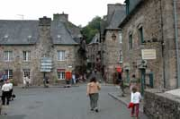

Франция – страна, олицетворяющая собой красоту и роскошь, изысканный вкус и историческое наследие
многих эпох, загадочное обаяние старины и молодость современных поколений. Для многих Франция
начинается с Парижа, но побывать только в столице не значит понять и узнать всю страну.
Каждый уголок Франции связан с историей. В любом городе, даже в самой маленькой деревушке вы обязательно
найдёте памятники старины. Каждый уголок этой прекрасной страны дышит стариной и величием прошлых эпох. В Париже
вы увидите всемирно известный собор Парижской Богоматери, Лувр, и многое другое. Незабываемое впечатление у вас
оставит Лион с его средневековыми улочками – он был образован ещё до нашей эры и был излюбленным местом римских
императоров. Не пропустите возможность побывать в долине замков Луары, где каждый из многочисленных замков
поделится с вами свой историей и красотой. Франция заслуженно славится своими горнолыжными курортами. Горные
лыжи – великолепный отдых и прекрасный, стремительный спорт. Это очарование снежных гор, покорение непривычной стихии
снега и скорости, искрящийся снег, новизна ощущений, и незабываемый мир горнолыжной тусовки. Все ощущения невозможно
описать словами – это нужно увидеть и попробовать самому…
Приезжайте сюда и не волнуйтесь – скучать никто не будет.
Французские горнолыжные курорты предоставляют разнообразный сервис. Любые, даже самые взыскательные туристы смогут найти
здесь всё, что им требуется. Красоты альпийских вершин, ослепительное солнце и мягкий климат привлекают туристов из всех
стран мира в маленькие горные отели, шале и горнолыжные комплексы.
Лазурный берег – одно из самых известных и престижных мест для любителей отдыха на море. Ницца, Канны, Монако, Сент Тропе,
Антиб – города красоты, богатства, великолепных отелей, ярких красок моря и беззаботной жизни. Биарриц – один из известнейших
курортов Европы. Великолепные пляжи, океанический воздух и очаровательные отели, расположенные по всему побережью. Атлантическое
побережье Нормандии и Бретани привлекает сюда туристов своими бесконечными пляжами, свежим морским воздухом и маленькими прибрежными городами.
|